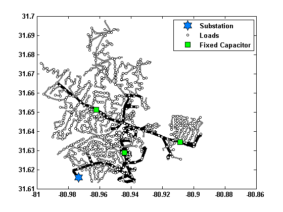
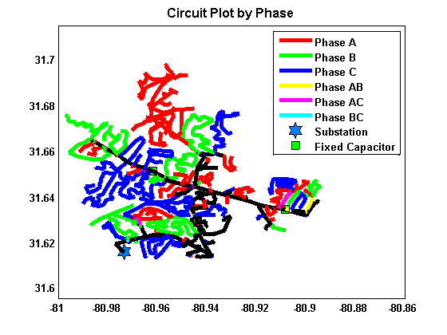
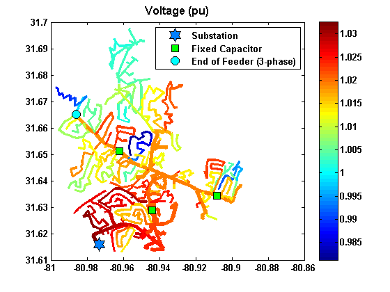
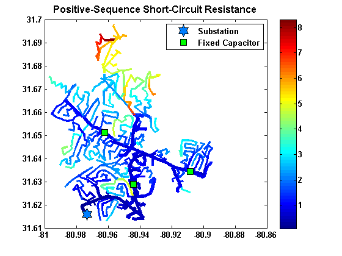
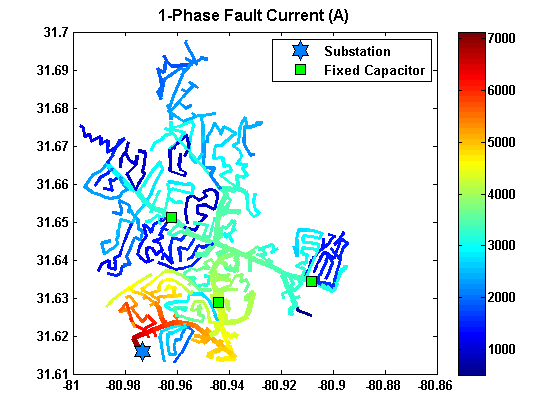
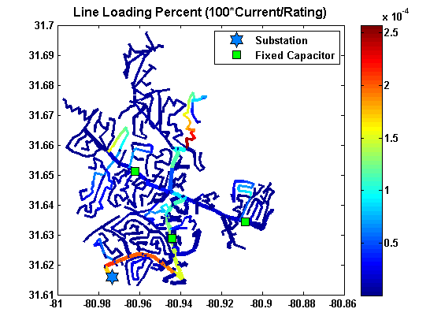
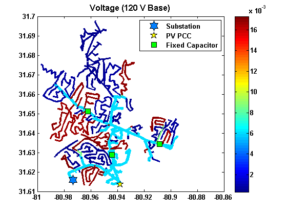

plotCircuitLines
Plots the feeder circuit diagram
Contents
Syntax
plotCircuitLines(DSSCircObj); plotCircuitLines(DSSCircObj, _'PropertyName'_ ,PropertyValue); Handles = plotCircuitLines(DSSCircObj, _'PropertyName'_ ,PropertyValue);
Description
Function to plot the feeder circuit diagram. The coloring and line thickness plotting styles can be customized by the user through the function property inputs. If no properties are selected, the plotCircuitLinesOptions GUI window is displayed to assist the user is selecting plotting options. Clicking on objects in the figure will display the name of the object, and right clicking will give a menu for viewing properties of the object.
Inputs
- DSSCircObj - link to OpenDSS active circuit and command text (from DSSStartup)
- Properties - optional properties as one or more name-value pairs in any order
- -- 'Coloring' - Defines how the circuit lines are colored in the figure.
- ------ ColorSpec - three-element RGB vector specifying the line color
- ------ 'numPhases' - black for 3-phase lines and a light gray for 1 or 2 phase lines. This is the default
- ------ 'perPhase' - colors each phase (or combination of phases) a different color in the figure
- ------ 'energyMeter' - colors each energy meter zone a different color in the figure
- ------ 'voltage120' - contours the line colors according to the voltage on a 120V base
- ------ 'voltagePU' - contours the line colors according to the per unit voltage
- ------ 'voltage' - contours the line colors according to the voltage (kV)
- ------ 'voltage120LL' - contours the line colors according to the line-to-line voltage on a 120V base
- ------ 'voltagePULL' - contours the line colors according to the line-to-line per unit voltage
- ------ 'voltageLL' - contours the line colors according to the line-to-line voltage (kV)
- ------ 'lineLoading' - contours the line colors according to the line loading (current/line rating)
- ------ 'realLosses' - contours the line colors according to the real power line losses (kW/km)
- ------ 'reactiveLosses' - contours the line colors according to the reactive power line losses (kVAR/km)
- ------ 'distance' - contours the line colors according to the distance from the substation
- ------ 'unbalance' - contours the line colors according to the power (kVA) unbalance between phases
- ------ 'voltageAngle' - contours the line colors according to the angle of the bus voltage phasor
- ------ 'powerFactor' - contours the line colors according to the power factor of the power flow
- ------ 'powerFlowDirection' - contours the line colors according to the line power flow (kW) with separate colors for upstream and downstream flow
- ------ 'impedance' - contours the line colors according to the positive-sequence short-circuit impedance magnitude
- ------ 'resistance' - contours the line colors according to the positive-sequence short-circuit resistance
- ------ 'reactance' - contours the line colors according to the positive-sequence short-circuit reactance
- ------ 'faultCurrent3P' - contours the line colors according to the fault current for a 3-phase fault
- ------ 'faultCurrent1P' - contours the line colors according to the fault current for a 1-phase fault
- ------ 'faultCurrentLL' - contours the line colors according to the fault current for a Line-to-Line fault
- -- 'ContourScale' - Defines the minimum and maximum value for contouring or auto scaling {'auto'} | [0 5]
- -- 'Thickness' - Defines how the thickness of the circuit lines is displayed. {'numPhases'} | 'current' | 'lineRating' | 0 - 10
- ------ 0 - 10 - numeric value for the fixed line width
- ------ 'numPhases' - thicker lines for 3-phase power lines
- ------ 'current' - thickness is linearly related to the current flowing through the lines relative to the maximum current in any line
- ------ 'lineRating' - thickness is linearly related to the current rating of the line relative to the maximum line rating
- -- 'SubstationMarker' - Property for if the substation should be marked {'on'} | 'off'
- -- 'SubEquipmentMarker' - Property for if equipment (such as loads, transformers, etc.) in the substation (using distance) whose marker is turned on should should be marked 'on' | {'off'}
- -- 'PVMarker' - Property for if the PV PCC should be marked (if it exists) {'on'} | 'off'
- -- 'GeneratorMarker' - Property for if generators should be marked (if it exists) {'on'} | 'off'
- -- 'LoadMarker' - Property for if loads should be marked {'on'} | 'off'
- -- 'RegulatorMarker' - Property for if controlled transfomers such as regulators (LTC and VREG) should be marked {'on'} | 'off'
- -- 'MVTransformerMarker' - Property for if medium-voltage transfomers (>1000V) should be marked 'on' | {'off'}
- -- 'BoosterMarker' - Property for if boosters transformers (uncontrolled NLTC) should be marked {'on'} | 'off'
- -- 'ServiceTransformerMarker' - Property for if service transfomers (<1000V) should be marked 'on' | {'off'}
- -- 'CapacitorMarker' - Property for if capacitors should be marked {'on'} | 'off'
- -- 'CapacitorLabel' - Property for if capacitors should be labeled with textbox/arrow for capacitor size 'on' | {'off'}
- -- 'EndOfFeederMarker' - Property for if the end of the feeder by distance (3-phase section) should be marked 'on' | {'off'}
- -- 'EndOfFeederLabel' - Property for if the end of the feeder should be labeled with textbox/arrow for capacitor size 'on' | {'off'}
- -- 'CustomMarker' - Property for marking a custom bus by the user specifying a bus name or a cell array of bus names {'off'} | busNameString
- -- 'CustomLegend' - Text to place in the legend describing the custom bus specified in CustomMarker
- -- 'EnergyMeter' - Name or cell array of names of the energy meter zones to plot {'all'} | energyMeterName
- -- 'NumPhases' - Property for if only lines with the specified number of phases should be plotted [1,2,3] | 1 | [2,3] | [1,2]
- -- 'PhasesToPlot' - Property for which phases to plot (A,B,C). True/False values for each phase [1,1,1] | [1,0,0]
- -- 'BusName' - Property for the name of the bus (string) that the circuit should be plotted to. Only the direct line between the bus and the substation will be plotted, unless all buses are selected. {'all'} | busName
- -- 'Downstream' - If a BusName is given, all buses in the electrical path to the substation (upstream) will be plotted, and if this property is on, all buses in the electrical path downstream of BusName will be plotted too 'on' | {'off'}
- -- 'MappingBackground' - Property for if the satellite image should be displayed in the background. Note, this only works if the coordinates are in latitude/longitude values or if initCoordConversion was performed. {'none'} | 'hybrid' | 'satellite' | 'roadmap' | 'terrain'
- -- 'Lines' - Structure of the circuit lines from getLineInfo. If no input is given, the structure is filled from the most current power flow solution in DSSCircObj COM.
- -- 'PV' - Structure of the PV from getPVInfo. If no input is given, the structure is filled from the most current power flow solution in DSSCircObj COM.
- -- 'Generators' - Structure of the Generators from getGeneratorInfo. If no input is given, the structure is filled from the most current power flow solution in DSSCircObj COM.
- -- 'Transformers' - Structure of the circuit transformers from getTransformerInfo. If no input is given, the structure is filled from the most current power flow solution in DSSCircObj COM.
- -- 'Capacitors' - Structure of the circuit capacitors from getCapacitorInfo. If no input is given, the structure is filled from the most current power flow solution in DSSCircObj COM.
- -- 'Loads' - Structure of the circuit loads from getLoadInfo. If no input is given, the structure is filled from the most current power flow solution in DSSCircObj COM.
Outputs
- Handles - structure of handles for each type of object plotted in the figure
- A figure of the circuit is displayed in the current axes based on the option inputs
Notes
For the right-click visualizations, the AllowForms field of DSSCircObj must be set to 1, which is the default value. Currently, OpenDSS 7.6.3 (the current version as of this writing) does not allow for setting the AllowForms field back to 1 after setting it to 0.
Example
Examples of several different circuit plots that can be created
[DSSCircObj, DSSText, gridpvPath] = DSSStartup; DSSText.command = ['Compile "' gridpvPath 'ExampleCircuit\master_Ckt24.dss"']; DSSText.command = 'solve'; figure; plotCircuitLines(DSSCircObj,'CapacitorMarker','on','LoadMarker','on') figure; plotCircuitLines(DSSCircObj,'Coloring','perPhase','Thickness',3,'MappingBackground','hybrid') figure; plotCircuitLines(DSSCircObj,'Coloring','voltagePU','EndOfFeederMarker','on') figure; plotCircuitLines(DSSCircObj,'Coloring','resistance') figure; plotCircuitLines(DSSCircObj,'Coloring','faultCurrent1P') figure; plotCircuitLines(DSSCircObj,'Coloring','lineLoading') DSSText.command = ['Compile "' gridpvPath 'ExampleCircuit\Ckt24_PV_Central_7_5.dss"']; DSSText.command = 'solve'; figure; plotCircuitLines(DSSCircObj,'Coloring','voltage120') %      